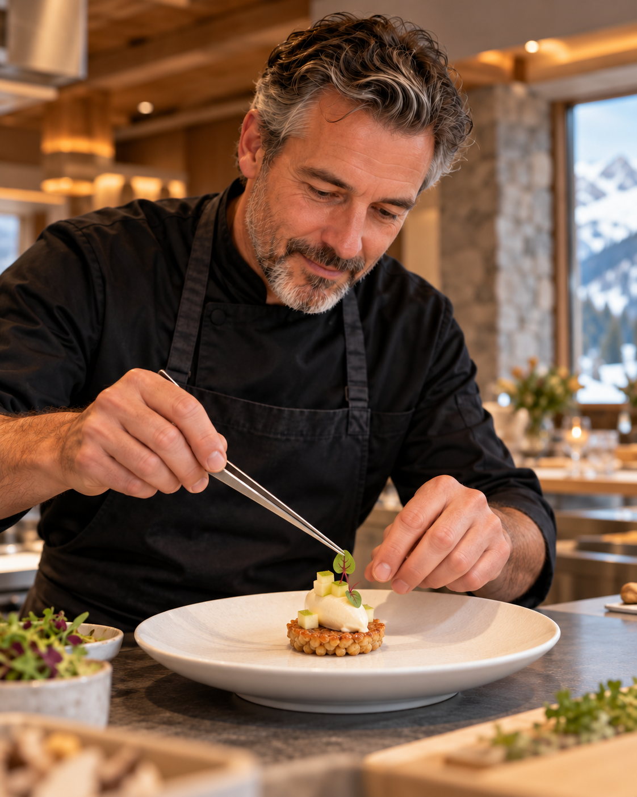

Une cuisine de caractère
Des recettes savoyardes travaillées avec des produits frais et locaux.
Restaurant à Chambéry
Quai Antique vous accueille autour d'une cuisine de saison, dans un cadre chaleureux inspiré des Alpes.
Notre maison
Une information claire, des produits de saison et un parcours de réservation rapide.
Des recettes savoyardes travaillées avec des produits frais et locaux.

Une salle conviviale et une terrasse pour profiter de chaque saison.

Une équipe disponible pour vous accompagner avant et pendant votre repas.
Galerie
Découvrez la salle, la terrasse et quelques spécialités de la maison.
Réservation
Les créneaux sont proposés par tranche de 15 minutes. La disponibilité réelle sera confirmée par le serveur.
Espace client
Connectez-vous pour retrouver et gérer vos réservations.
Nouveau client
Un compte permettra de consulter, modifier ou annuler vos réservations.
Espace client
Maquette fonctionnelle de l'espace client, prête à être alimentée par l'API.
Les données réelles apparaîtront après connexion.
Administration
Interface prévue pour le personnel : les droits et données seront contrôlés par Symfony.
Services, créneaux de 15 minutes et nombre maximum de convives.
Catégories, plats, menus, descriptions et prix.
Ajouter, modifier ou retirer les photos du restaurant.
Filtrer et traiter les demandes par date.